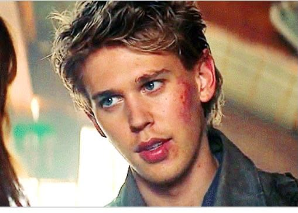
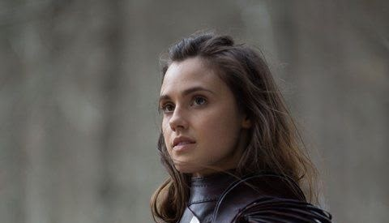
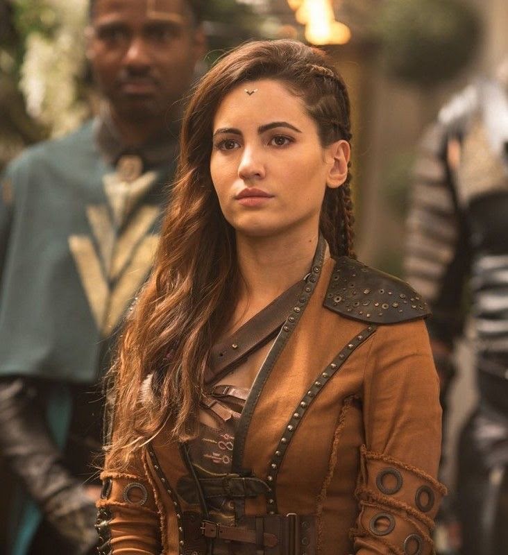
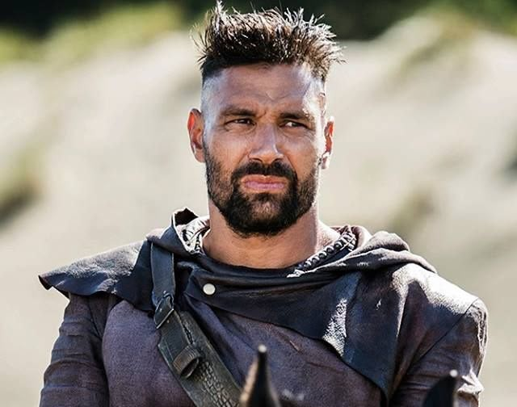
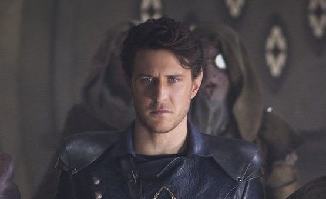
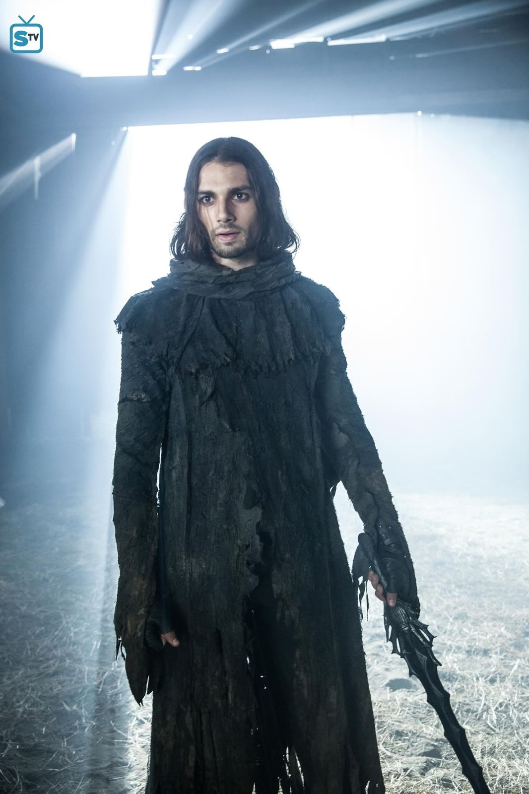
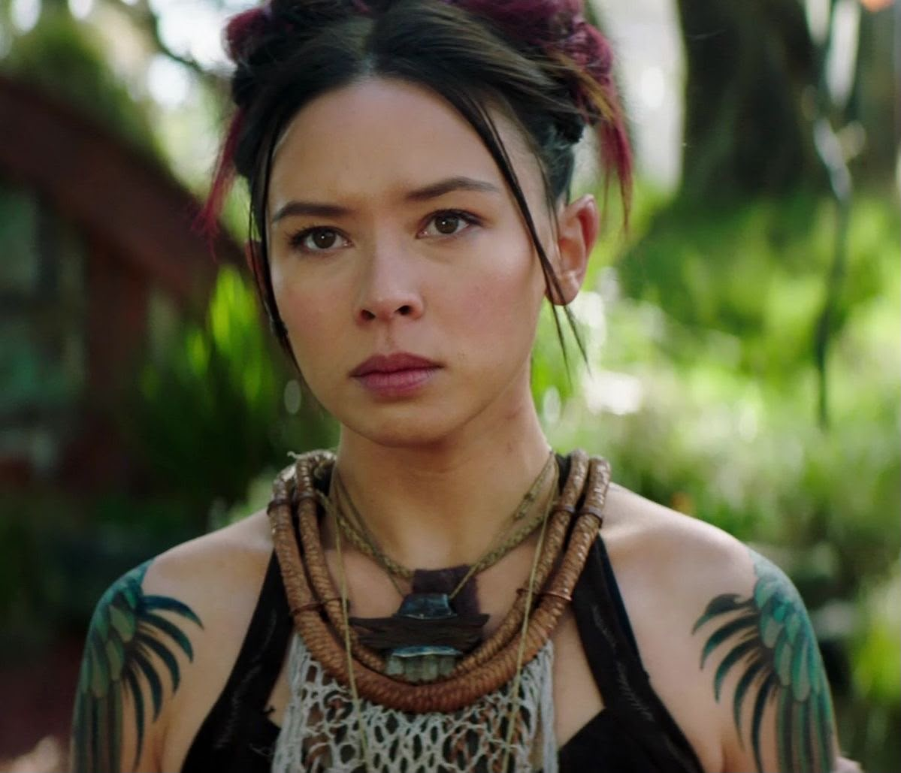
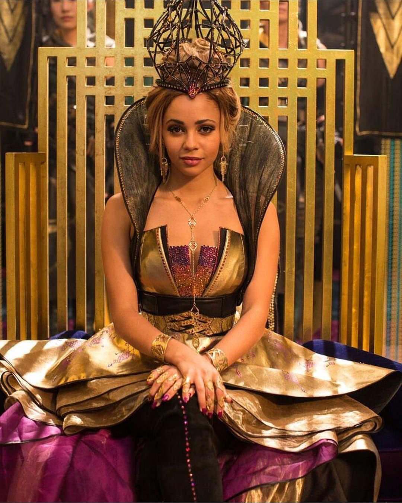

Natureza e ruínas
Florestas, construções antigas e lugares que guardam pistas sobre o passado.
UM MUNDO DE MAGIA • DESTINO • CORAGEM
Quando a escuridão ameaça o mundo, uma jornada extraordinária começa.
Explorar o universo ↗As Crônicas de Shannara é uma série de fantasia e aventura ambientada em um futuro distante, no qual a magia voltou a fazer parte do mundo.
A história acompanha personagens que precisam proteger as Quatro Terras de forças ameaçadoras. Elfos, humanos, trolls e outras criaturas dividem esse universo, onde antigas lendas, escolhas difíceis e coragem têm grande importância.
A produção para a televisão foi inspirada na obra literária de Terry Brooks. A adaptação apresenta aventuras, conflitos e a busca por esperança diante de perigos que podem mudar o destino de todos.
“O destino de um mundo pode depender da coragem de poucas pessoas.”
IDEIA central do universo de ShannaraUm mundo de povos diferentes, paisagens misteriosas e magia antiga.
Florestas, construções antigas e lugares que guardam pistas sobre o passado.
Elfos, humanos, trolls e outras criaturas formam sociedades com histórias próprias.
Conhecimentos antigos e objetos especiais influenciam os caminhos dos personagens.
Use os filtros para explorar os personagens apresentados neste guia.

Um jovem ligado à linhagem Shannara que descobre ter um papel importante na proteção das Quatro Terras.

Uma princesa élfica determinada, que enfrenta desafios e responsabilidades muito maiores do que imaginava.

Uma rover independente e habilidosa, que se torna uma aliada importante na missão de salvar as Quatro Terras.

O último druida, sábio e poderoso, que orienta Wil e os demais na missão de proteger as Quatro Terras.

Príncipe élfico que amadurece ao assumir responsabilidades pelo futuro de seu povo.

Jovem elfo com o dom de ter visões, cuja trajetória toma rumos importantes e perigosos.

Uma jovem com habilidades mágicas que aparece na segunda temporada e procura respostas sobre sua origem.

Uma mulher misteriosa que se revela princesa de Leah e tem papel importante na segunda temporada.

Um habilidoso caçador de recompensas conhecido nas Quatro Terras como Mestre das Armas.
Aqui estão os nove personagens principais da adaptação televisiva, incluindo os integrantes centrais das duas temporadas. Allanon é o druida que orienta o grupo.
Conheça os principais adversários da série e entenda como cada um representa um tipo diferente de ameaça.

Antigo druida élfico corrompido e transformado em demônio. Busca enfraquecer a Ellcrys e libertar forças demoníacas.

O jovem elfo com o dom das visões é corrompido pelas forças das trevas e passa a ajudar no retorno do Warlock Lord.

Uma poderosa força das trevas que Bandon tenta trazer de volta. Sua volta ameaça mergulhar as Quatro Terras no caos.

Líder do grupo Crimson, acredita que a magia deve ser eliminada e persegue aqueles que a utilizam.
Imagens dos personagens: Dagda Mor · Bandon · Warlock Lord · General Riga
A série adapta elementos do universo criado por Terry Brooks. Sua narrativa mistura fantasia, aventura e drama, apresentando uma nova geração de heróis diante de ameaças antigas.
A adaptação televisiva teve duas temporadas. Para conhecer melhor a história, vale observar como os personagens amadurecem e como suas decisões afetam o destino das Quatro Terras.
Salve seus personagens preferidos e registre sua opinião sobre o universo da série.
Clique em “Adicionar aos favoritos” nos cards.
0 personagem(ns) salvo(s)
Ainda não há opiniões cadastradas.